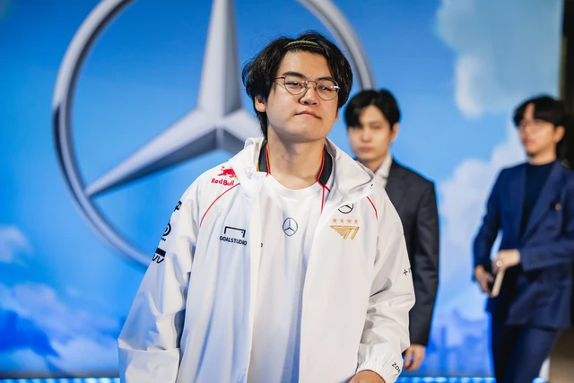

Hé lộ lịch tập "địa ngục", siêu sao BLG "gáy khét" sẽ ôm trọn danh hiệu LPL lẫn MSI
CEO T1 tiếp tục có động thái mới về Gumayusi - Smash khi mùa giải Regular Seasons 2025 chuẩn bị bắt đầu.
CEO T1 tiếp tục lên tiếng về vụ việc Gumayusi - Smash
Trong những ngày này, có lẽ các fan T1 là những người vô cùng hồi hộp và mong chờ Regular Seasons 2025 nhất. Không phải vì T1 có thể cạnh tranh suất dự MSI và CKTG cũng như danh hiệu hay không, mà chỉ vì có lẽ khi đó, đội tuyển này mới công bố đội hình chính thức cho mùa giải sắp tới. Dù vậy, thay vì là thông báo đội hình chính thức thì mới đây, CEO T1 đã có những phát biểu mới về vụ việc.
Cụ thể, trang X của T1 đã đăng một tâm thư khá dài của CEO T1 Joe Marsh với nội dung xoay quanh vụ việc của Gumayusi - Smash. Tuy nhiên, nhiều khán giả nhanh chóng nhận ra nội dung của những chia sẻ này... chẳng có gì mới khi vẫn là "Gumayusi phải cạnh tranh với Smash" và T1 sẽ xuất phát trong phần còn lại của mùa giải với đội hình 6 người. Tuy nhiên, vị CEO cũng có 1 chi tiết ngầm đẩy trách nhiệm sang cho Ban huấn luyện đội.
Cụ thể, một câu trong chia sẻ của vị CEO có nội dung: "Ban huấn luyện yêu cầu sử dụng Smash tại LCK Cup và khi đó, cậu ấy đã có một phong độ tốt. Quyết định nhanh chóng được đưa ra ngay sau đó". Ngoài ra, vị CEO còn gây tranh cãi khi khẳng định: "Với tư cách là CEO, tôi đã đề nghị đưa Gumayusi vào đội hình xuất phát của Regular Seasons 2025".
Đây rõ ràng là một khẳng định rất bất hợp lý. Bởi lẽ, với tất cả những gì Gumayusi phải thể hiện, vị trí trong đội hình xuất phát mặc nhiên phải là của Xạ Thủ sinh năm 2002. Thế nhưng, khẳng định của CEO T1 lại có phần trái ngược lẽ thường và khiến cộng đồng fan đội tuyển này cảm thấy bức xúc.
Cộng đồng tiếp tục tranh cãi về phát biểu mới của T1 xoay quanh drama Gumayusi - Smash
Rõ ràng, việc một tuyển thủ như Gumayusi phải cạnh tranh suất đánh chính đã là một điều khá khó hiểu, nay CEO T1 lại có những động thái đổ trách nhiệm về phía BHL, và đưa ra khẳng định gây tranh cãi về việc xếp Gumayusi vào đội hình xuất phát đã khiến cộng đồng T1 tiếp tục bức xúc. Nhiều ý kiến đã thực sự bày tỏ nỗi thất vọng trong khi không ít fan khẳng định mùa giải này của T1 đang rất tăm tối.
Nhưng khi mọi quyết định đã được đưa ra, khán giả cũng chẳng thể làm gì khác hơn. Và kết quả của T1 tại mùa giải năm nay, có lẽ cũng sẽ thể hiện đúng lựa chọn của đội tuyển này, mà đầu tiên, chính là từ đội hình xuất phát của nhà vô địch CKTG 2024.